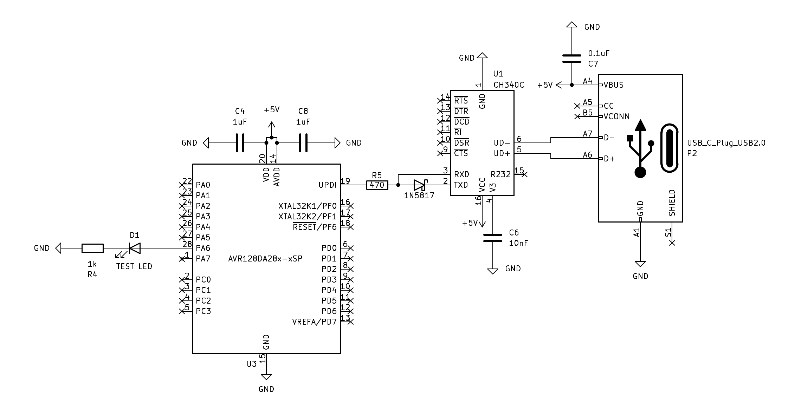

Mi primer programa (Blink)
Creo que es un programa clásico hacer el efecto Blink, equivale al “Hola Mundo” en los microcontroladores, se puede hacer de varias formas, te mostraré cada una, algunas son fáciles y otras más complejas, pero todas llegan a lo mismo. Este es el esquema del circuito que será necesario:

Primera forma:
El siguiente código es para un blink indicando el encendido y el apagado del pin.
|
|
Segunda forma:
Podemos mejorar el código haciendo uso de un registro especial llamado OUTTGL que hace de toggle:
|
|
Tercera forma:
Usaremos el timer/counter A (TCA) para lograr el mismo efecto, esta funcionalidad NO tiene acceso al pin PA6, pero sí al pin PA0. No se usa la estructura while, ni tampoco la función _delay_ms. Los tiempos se calculan, ya lo verás.
|
|
Si buscamos encender durante un segundo y apagar durante otro segundo, esto quiere decir que es una frecuencia de 0.5Hz, por lo que el período es de 2 segundos, cada 1/2 ciclo ó semiperíodo equivale a un segundo. Cómo ambos semiperíodo duran el mismo tiempo se dice que tiene duty del 50%.
Si observas el código, verás un parámetro llamado TCA_SINGLE_CLKSEL_DIV1024_gc que define un preescalado de 1024. Y tu reloj interno está configurado a 24MHz (24.000.000 Hz). Con los valores identificados y con la siguiente fórmula podrás calcular el valor del comparador TCA0.SINGLE.CMP0 para definir el tiempo de espera que permite generar la frecuencia deseada.
Cómo estamos usando el timer/counter A de varios que tiene el microcontrolador, este tiene una resolución de 16-bit, quiere decir que el contador va desde el 0 hasta 65535 (216 − 1). Cada vez que se cuenta, hay un comparador CMP0 que verifica si el valor es igual al definido 23436 y al cumplir la condición el contador vuelve a cero (0).
Ahora que tenemos todo el contexto, necesitamos que el contador se reinicie cada medio ciclo (semiperíodo):
Para comprobar los cálculos:
Compilar y subirlo
Para compilarlo deberá ejecutar el siguiente comando:
|
|
Para subir el programa al microcontrolador, deberá ejecutar el siguiente comando:
|
|
Si todo fue bien, podrá disfrutar del led parpadeando.
Troubleshooting
Si al usar avrdude para compilar aparece el siguiente mensaje de error:
avr-gcc: fatal error: cannot read spec file 'device-specs/specs-avr128da28': No such file or directory
Posiblemente, no tengas instalada la versión más resiente que incorpora las librerías de la familia AVR Dx.